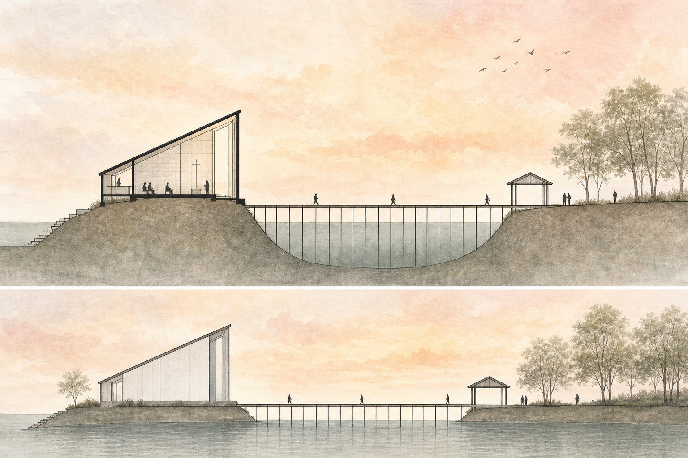
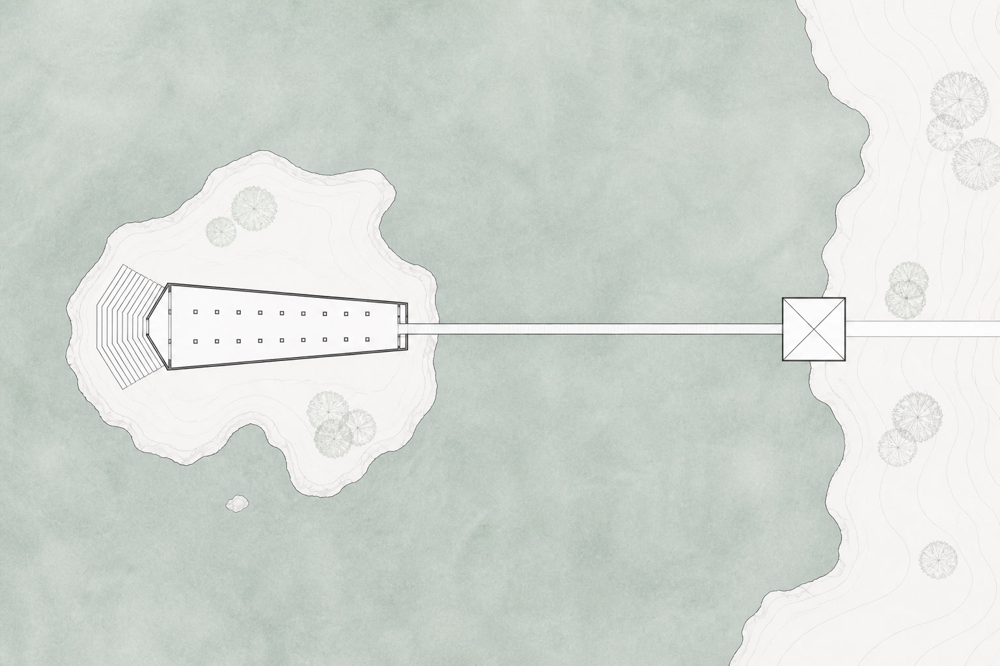
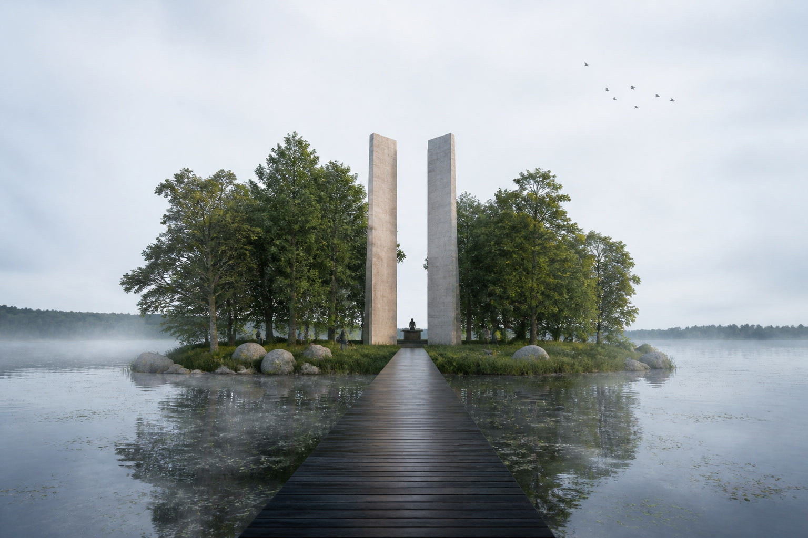

Chapel in La Primavera, Culiacán, Mexico. A long volume on a raised island in a lake, reached by a boardwalk from a small shore pavilion.

A chapel on an island in a lake.
No area, client, or year is published here.
Lake Chapel is a chapel in La Primavera, Culiacán, Mexico — a separate work from PRADOS, in the same area.
The section shows a long chapel volume on a raised embankment or island, with a sharply slanted roof, and a boardwalk on piles across the water to a small gabled pavilion on the mainland shore, among trees. The site plan is axial: a tapered chapel on the island, amphitheater-like steps at one end, a double row of columns, and a long bridge to a square shore pavilion. A view of the island shows two tall vertical monoliths — warm stone and grey concrete — as a portal, with a wooden pier approaching across still water, and people at a contemplative scale.

